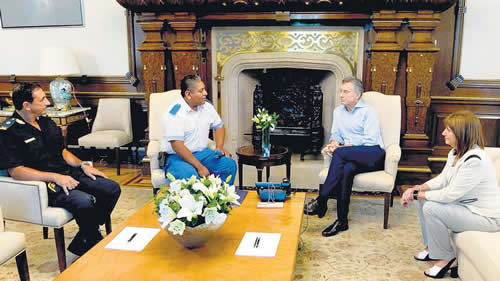

Real Chubut - Agencia de Noticias


El Gobierno prefiere el gatillo fácil

El presidente Macri recibió en la Rosada a Luis Chocobar, policía de Avellaneda, quien el 8 de diciembre mató a un joven que acababa de apuñalar a un turista. El disparo mortal fue por la espalda. Participaron Bullrich y Ritondo.
Mauricio Macri realizó hoy un acto que no tiene antecedentes en democracia. Como presidente de la Nación recibió a un policía procesado por “excesos en la legítima defensa”. Se trata del policía Luis Chocobar, quien intervino, vestido de civil, tras el asalto a un turista norteamericano, y le disparó por la espalda a uno de los agresores, mientras huía.
Chocobar llegó vestido con su uniforme a la Casa Rosada y subió al despacho presidencial, donde Macri lo recibió junto con la ministra de Seguridad, Patricia Bullrich, y su par bonaerense, Cristian Ritondo. Allí reconoció su “valentía”, y se fotografió con el procesado, foto que, poco después, subió a las redes sociales. “Quería ofrecerle todo mi apoyo, decirle que lo acompañamos y que confiamos en que la Justicia en otra instancia lo liberará de todo cargo, reconociendo su valentía”, señaló el jefe de Estado, quien remarcó que el policía “defendió al turista en La Boca”.
El hecho ocurrió el 8 de diciembre pasado, en la esquina de Olavarría y Garibaldi, La Boca, cuando Chocobar, miembro de la policía local de Avellaneda, vio cómo dos hombres apuñalaban a Frank Josepk Wolek para robarle. Chocobar dio la voz de alto y los dos asaltantes escaparon. Wolek fue internado, y recibió el alta 20 días después del robo, tras permanecer internado en terapia intensiva en el mismo centro de salud luego de ser operado de urgencia por haber sufrido lesiones en la aurícula izquierda y en el ventrículo derecho, un puntazo en cada pulmón y otras seis heridas.
Uno de los ladrones fue detenido por dos peatones desarmados a los 100 metros. El otro, Pablo Kukoc, de 18 años, fue perseguido unos 300 metros por Chocobar y recibió dos disparos, uno en una pierna y le rompió el fémur, y otro que le alcanzó el colon, el hígado y el intestino delgado y resultó el disparo mortal.
Ese segundo disparo, innecesario, fue el que derivó en el procesamiento de Chocobar ya que impactó por la espalda.
Intervino el juez nacional de menores 1, Enrique Gustavo Velázquez, quien procesó a Chocobar por homicidio con exceso en la legítima defensa y lo embargó por 400 mil pesos.
Ayer, después de la reunión, Macri tuiteó: “Hoy recibí a Luis Chocobar en la Casa Rosada. Quería ofrecerle todo mi apoyo, decirle que lo acompañamos y que confiamos en que la Justicia en otra instancia lo liberará de todo cargo, reconociendo su valentía”. Con otra instancia se refería a una próxima apelación ante la Cámara con la intención de dar vuelta el procesamiento.
En simultáneo, también desde su cuenta de Twitter, la ministra de Seguridad, Patricia Bullrich, decía que “Junto al Presidente @mauriciomacri recibimos al policía Luis Chocobar que salvó a un turista de la muerte. Actuó en cumplimiento de su deber de Policía y así debe ser interpretado. Queremos defender a los Policías que cuidan a la gente y no que terminen acusados o presos”.
Las baterías gubernamentales siguieron disparando sobre la red: el ministro de Seguridad bonaerense, Cristian Ritondo, tuiteó que “Nos sorprende. Defendió a un turista poniendo en riesgo su vida cumpliendo con su compromiso de servir y proteger y termino embargado. Tendrá nuestro apoyo para que triunfe la justicia.”
El encuentro del primer mandatario con el policía procesado se dio a exactos seis meses de la desaparición y muerte de Santiago Maldonado en Chubut durante un operativo represivo de Gendarmería Nacional, que el Gobierno siempre reivindicó.
Cuando los funcionarios tomaron contacto con el periodismo, Bullrich sostuvo que “nosotros lo vamos a ayudar en la defensa legal, tanto nosotros como la provincia de Buenos Aires. Hemos tomado contacto con el juez para analizar los contactos”.
Una periodista allí presente entonces le preguntó: “¿No se trata de una presión del poder político sobre el judicial?”.
“No –contestó Bullrich—. Porque lo que vamos a dar es una defensa legal, que es poner abogados para que den un punto de vista alternativo al que tuvo el juez. Y también hay una cámara. Lo importante es que damos vuelta la realidad (sic). Hemos dado vuelta lo que pasaba acá, los victimarios parecían las víctimas, en nuestro Gobierno hemos revertido esto, tanto en las fuerzas y como en la sociedad”.
También el policía cuestionado aportó información. “Me siento un poco decepcionado de la Justicia, la verdad me está cagando la vida y no logro entender el motivo por el cual quieren sacarme esa cantidad de plata con la que no cuento porque soy un trabajador”, dijo Chocobar.
La polémica se desató porque a las declaraciones oficiales le respondieron especialistas y público. La abogada del Cepoc y autora de Masacre en el Pabellón Séptimo, Claudia Cesaroni, sostuvo mientras concurría a los actos de memoria por cumplirse seis meses de la muerte de Santiago Maldonado, tuiteó que “Hace 6 meses el Estado provocó la muerte de Santiago Maldonado, y en vez de tuitear sobre eso, tenemos que andar recordando que un policía que asesina por la espalda y a una persona que huye, no es un héroe, sino el autor de un delito gravísimo, un homicidio calificado”. Y también, “Quiero recordar, con toda humildad, que en nuestro país no existe la pena de muerte. Y si alguien supuestamente roba a otra persona, incluso si la lastima, debe ser detenida y si corresponde, condenada. No asesinada, y menos por la espalda cuando está huyendo. Se entiende?”.
El periodista Juan Amorín tuiteó “Hace seis meses que la familia de #SantiagoMaldonado espera que Macri los reciba y les prometa que aclarará su muerte en medio de una represión ilegal de Gendarmería. Pero es más importante recibir a un poli procesado por el homicidio de un delincuente al que mató por la espalda.
También Pablo Duggan envió desde su cuenta que “Hay muchos periodistas defendiendo a Chocobar. Les pregunto, ¿está bien matar a un chorro por la espalda cuando está en fuga? Según la ley no. Ojo con lo que defendemos a veces. Chocobar quiso ayudar, pero cometió una ilegalidad.”
Y el periodista Sebastián Lacunza tuiteó “La irresponsabilidad del gobierno al apoyar a Chocobar, en medio del proceso y con indicios de que mató a una persona abusando de su arma, la pagarán mañana chicos pobres que caerán víctimas del gatillo fácil, en casos con menos atención mediática”.
Y la legisladora porteña Andrea Conde: “Es macabro ver a @PatoBullrich y al presidente pasar sobre la justicia y felicitar a Chocobar, investigado x matar a un ciudadano. No nos sorprenda q cada vez haya más gatillo fácil si esta conducta es aplaudida x el propio gobierno. Lamentable.”
Desde la cuenta @fedebillie se sostiene: “El presidente habla de la ‘valentía’ de Chocobar cuando la reconstrucción judicial concluyó que le disparó por la espalda al sospechoso. Se da de narices hasta con las reglas del western.”
Fuente: Pagina 12